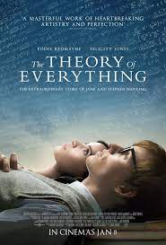
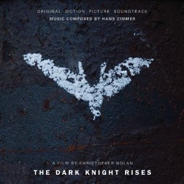
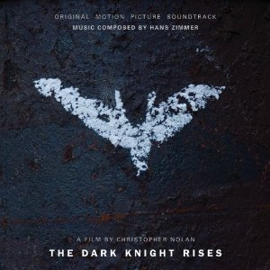
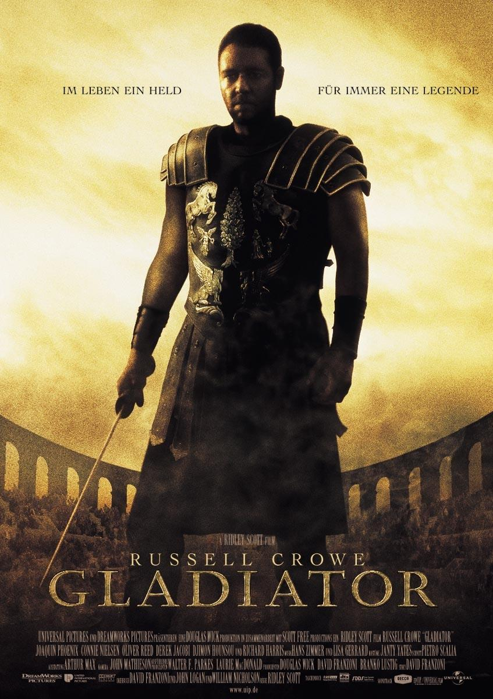
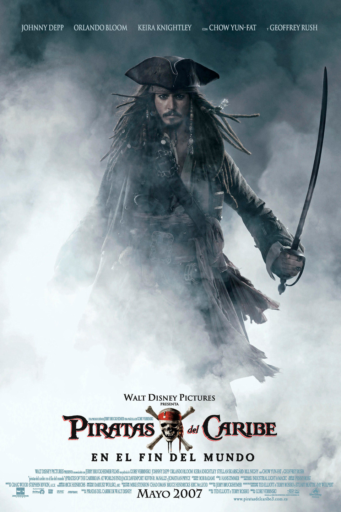
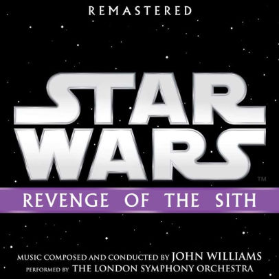
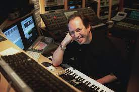

MÚSICAS RELAX
Esta es una playlist con Música tranquila cuando tienes que estudiar, para algunos es favorable (generar un ambiente de estudio), pero para otros aunque suene la musica mas tranquila se distraen, asi que ve que clase de persona eres. Advertencia: puede que ha ya añadido alguna música errónea. 😉 Algunos de los soundtracks son:
MÚSICAS CASUALES
Esta es la mayor recopilación de los mejores soundtracks que hice, y como es para un público promedio saque algunas que pueden ser exageradas, pero igual te dejaré el completo si quieres. Algunos de los soundtracks son:
 

MÚSICAS ÉPICAS
Aquí te dejo los soundtracks icónicos que hicieron historia en el Séptimo arte. Algunos de los soundtracks son:
  COMPOSITORES RECOMENDADOS
|  | |
| HANZ Zimmer Si John Williams y Danny Elfman fueron los magnates del siglo XX, Hanz Zimmer lo es de este siglo. El hombre que revolucionó la forma de hacer música, donde cada soundtrack que hace tiene una originalidad única quien pensaria unir violines con guitarras eléctricas? | Ludwing Göransson es uno de los compositores mas jovenes que lo rompió está última década , con su gran originalidad en sus músicas, el propio Hanz Zimmer recomendó a este joven cuando no iba a hacer el soundtrack de TENET con Cristopher Nolan. |
MAS CONTENIDO PROXIMAMENTE...SOLO EN cines